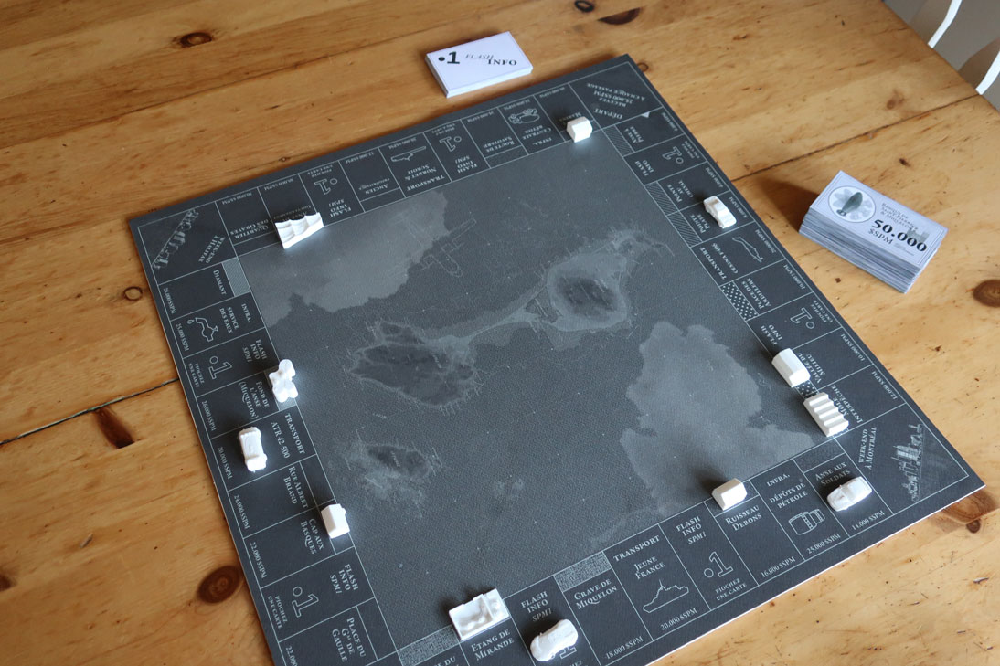

MSPM
Jeu de société
sur Saint-Pierre & Miquelon

Le MSPM est né le 12 décembre 2018 à 10h44, heure de Saint Pierre, et provient de la rencontre fortuite, sur une chaise de bureau, entre l’esprit fécond de T., celui plus conventionnel de Noël, et une certaine forme d’ennui.
De quoi s'agit-il ?
Le MSPM est un jeu de société sur Saint Pierre & Miquelon, conçu par des amateurs pour des connaisseurs. L’objectif y est plutôt simple : devenir le maître de ces îles. Vos moyens ? Contrôler les transports, investir dans l’énergie, construire des hôtels ou parier sur le logement. Il vous faudra donc choisir vos investissements et compter sur un peu de chance et beaucoup d’instinct pour ruiner vos concurrents.
De quoi ai-je besoin pour y jouer ?
Il est fortement conseillé au joueur :
- d’avoir une connaissance, même sommaire, de Saint Pierre et à Miquelon (pour apprécier pleinement le jeu)
- d’être accompagné d’une à cinq autres personnes
- d’avoir sous la main son plateau de jeu et ses accessoires
Que trouverai-je sur ce site ?
Vous pouvez télécharger ici de quoi fabriquer votre jeu. Il doit comporter les pièces suivantes :
- un plateau de jeu
- 28 cartes “titre de propriété”
- 52 cartes “flash info SPM 1ère”
- une liasse de dollars saint-pierrais ($SPM)
- 32 pions bâtiments (10 maisons, 6 bars, 4 hôtels, 3 fermes, 3 pêcheries, 2 centres commerciaux, 2 déchetteries, une distillerie et un resort touristique)
- 6 pions joueurs
En cliquant sur l'icone “télécharger fichier zip”, en partie latérale de cette page, vous accéderez à un dossier comportant les fichiers suivants :
- un plateau de jeu au format pdf, de dimension 50x50cm, prêt à être imprimé sur une feuille de format raisin (50x65cm)
- les cartes au format pdf, prêtes à être imprimées en recto-verso sur feuilles A3 puis à être découpées
- la feuille de règle au format pdf, prêtes à être imprimées en recto-verso sur feuilles A3 puis à être découpées
- une feuille de billets au format pdf, prêtes à être imprimées en recto-verso sur feuilles A3 puis à être découpées. Il est conseillé d’imprimer dix de ces feuilles pour un plateau, afin d’avoir une masse monétaire suffisante pour jouer en toute tranquilité.
- 32 pions bâtiments (10 maisons, 6 bars, 4 hôtels, 3 fermes, 3 pêcheries, 2 centres commerciaux, 2 déchetteries, une distillerie et un resort touristique)
- les pions joueurs et bâtiments au format stl, compatibles avec tout type d’imprimantes 3D.
Un fichier de cartes modifiables au format pdf est également mis à disposition. À l’aide d’un logiciel open-source comme Inscape, vous pouvez créer vos propres évènements et les intégrer à votre jeu. Si le coeur vous en dit et l’informatique ne vous effraie pas, vous pouvez les ajouter au dossier documents afin de les mettre à la disposition des autres joueurs.
Une question ?
The above header should be an H2 tag. Now, for a list of fruits:
Crazy linking action
I get 10 times more traffic from Google than from
Yahoo or MSN.